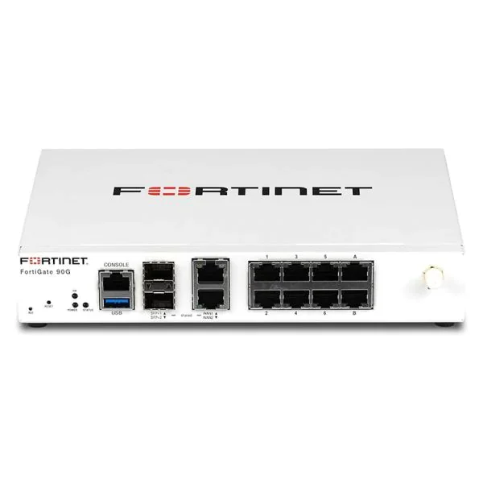

Consultoría en ciberseguridad
Ofrecemos asesoramiento experto para identificar y mitigar riesgos de seguridad en tu empresa.

Bienvenido a CyberGuard Pyme, tu solución integral de seguridad informática.
Ofrecemos asesoramiento experto para identificar y mitigar riesgos de seguridad en tu empresa.
Realizamos auditorías exhaustivas para evaluar la postura de seguridad de tu organización.
Diseñamos e implementamos soluciones personalizadas para proteger tus activos digitales.
Brindamos programas de capacitación para mejorar la cultura de seguridad en tu organización.

CyberGuard Pyme es una empresa dedicada a proteger a las pequeñas y medianas empresas de amenazas cibernéticas. Nuestro equipo de expertos trabaja para garantizar la seguridad de tus datos y sistemas.
Proporcionar soluciones de seguridad informática accesibles y efectivas para pymes.
Ser líderes en ciberseguridad para pequeñas y medianas empresas, ofreciendo servicios de alta calidad y confianza.